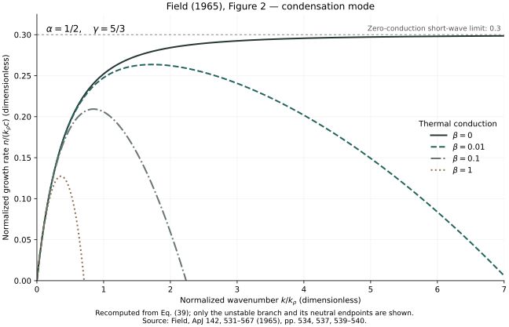

Long wavelengths
For this choice of α, the gas is stable to an isochoric perturbation but unstable to isobaric condensation. At small wavenumber, the finite sound speed limits the growth; the normalized rate tends to zero linearly with wavenumber.
Exhibit 01 / Field 1965 / Figure 2
A fresh calculation of the condensation-mode growth rate in a uniform gas.
Four curves connect Field’s linear theory to the scales on which structure can grow.
Also explore Figure 3: the wave mode →
Implemented and validated locally. This exhibit recomputes the published equation; it has not been compared point by point with digitized curves from the printed figure.

Physical interpretation
For this choice of α, the gas is stable to an isochoric perturbation but unstable to isobaric condensation. At small wavenumber, the finite sound speed limits the growth; the normalized rate tends to zero linearly with wavenumber.
Without conduction, the rate approaches 0.3. With conduction, temperature perturbations are smoothed on small scales. Each conducting curve reaches a finite cutoff beyond which the linear system is stable.
From the paper to the calculation
Field writes perturbations as exp(nt + i k·r): positive real n means growth. Using equations (27) and (38), define q = k/kρ, x = n/(kρc), α = kT/kρ, and β = kρ/kK. Here c is the adiabatic sound speed and the three characteristic wavenumbers are defined by equation (16).
Equation (39), regrouped as a cubic in x. The heat-loss function is energy losses minus gains per unit mass per unit time. β = 0 is the zero-conductivity limit. These normalizations assume kρ > 0, as in Figure 2.
For these parameters the polynomial is strictly increasing for nonnegative x. Within the unstable band it has exactly one positive root, which the code finds by bisection. At q = 0 it uses the limiting value x = 0.
For β > 0, the neutral cutoff is qc = √[(1 − α)/β]: approximately 7.0711, 2.2361, and 0.7071 for β = 0.01, 0.1, and 1. The first lies just beyond the plotted range, as in the original figure. Stable-domain growth values are left blank in the CSV.
Reproduce it
Save the three files below into one folder. Use Python 3.9 or later; the initial run used Python 3.9, NumPy 2.0.2, and Matplotlib 3.9.4. The calculation needs no source PDF, random seed, or external input data.
python3 -m venv .venv
.venv/bin/python -m pip install -r requirements.txt
.venv/bin/python reproduce.py --output outputOutputs: PNG and SVG figures, sampled curve data, and a validation report. The report records parameters, package versions, and SHA-256 hashes of the code and configuration.
Validation and limits
All checks run before figures are written; failure stops the script. Measured errors and tolerances are in the validation report.
The source equation, parameters, and overall curve shapes have been checked. A digitized comparison with the printed curves remains future work. This is a linear calculation in a uniform medium, without magnetic fields or gravity. Reported peaks are sampled maxima; the zero-conduction case has no finite-wavenumber peak.
George B. Field (1965), Thermal Instability, The Astrophysical Journal 142, 531–567. Equations (15)–(16), (27), (38)–(39); Figure 2. Read the original paper at ADS ↗
Figure 3 is now available: explore the growing wave mode with α = −2 → Figure 1 now connects both modes through their stability domains →
Code, explanatory content, and generated-data licenses are not yet selected. The original paper’s rights are separate. GitHub publication remains pending.